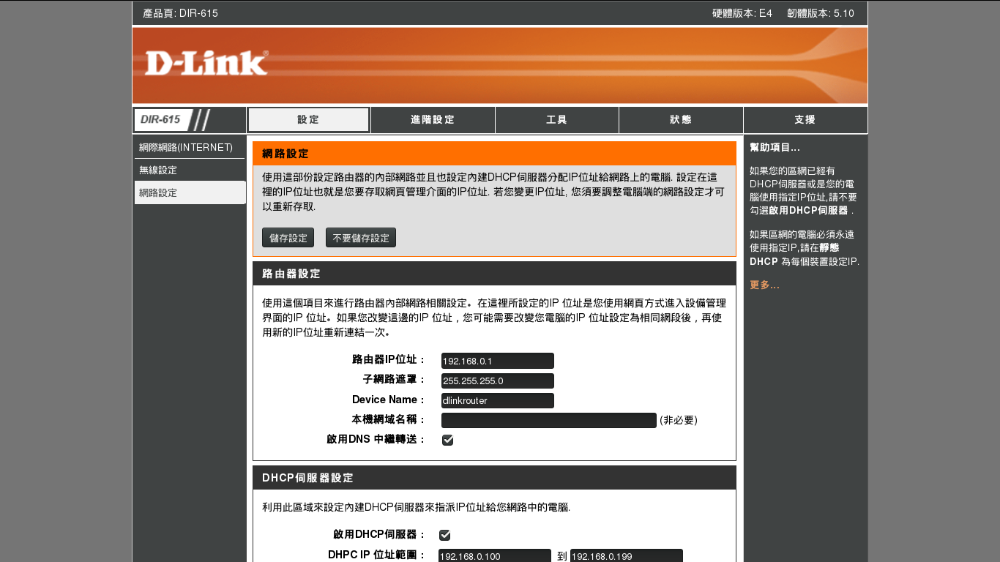

Configure Port Forwarding on a Router
To forward ports, you first need to understand about what your router does.
Your router has a function called Network Address Translation, or NAT, built-in. Inside your network, computers get their own addresses like 192.168.1.100. These addresses are called "private" or "reserved" addresses which automatically assigned by your home router via DHCP. A computers can communicate with router and with each other via its own address.
However, these "private" addresses could only be recognized within private network. It will be failed if others want to connect to a specific computer via an address like 192.163.1.100. Therefore, we should change it from the private IP of the computer to the public IP of the router. This is so called the port forwarding.
Configuration of port forwarding often varies from routers to routers. In this munual, we would use D-Link for demonstration.
- Use your favorite browser to visit "192.168.0.1" to connect to your D-Link router.

- Select Network Setting at the sidebar. Then scroll to Add New DHCP Reservation.

- Add a new DHCP reservation for your server's IP. Remember to save your configuration.

- Wait for seconds. Then Select Advance Setting at the top bar. Select Virtual Server at the siderbar.

Add virtual server.
Add a new application named SSH. Set Public port at what you set in sshd_config. (We use 10022 for demo.)
NOTE: Your can also set a port for private networkSelect the machine/server your want to forward the port. (Or just type its private IP)
NOTE: Remember to save your changes

NOTE: Connecting to your Rstudio server via TCP/IP is exactly the same thing as connecting to your SSH server. The only thing need to change is the port you forwarding. (Default port of Rstudio server is 8787.)